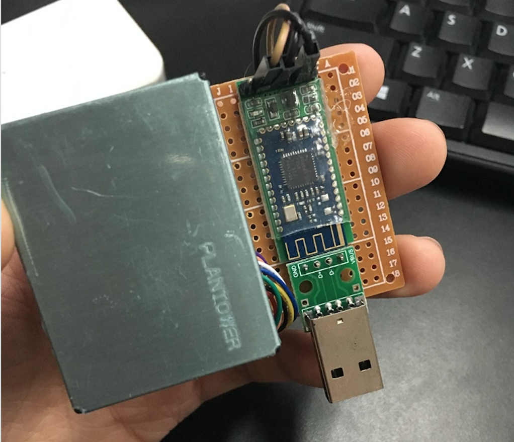
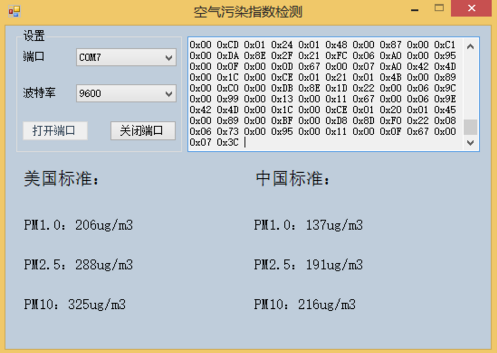
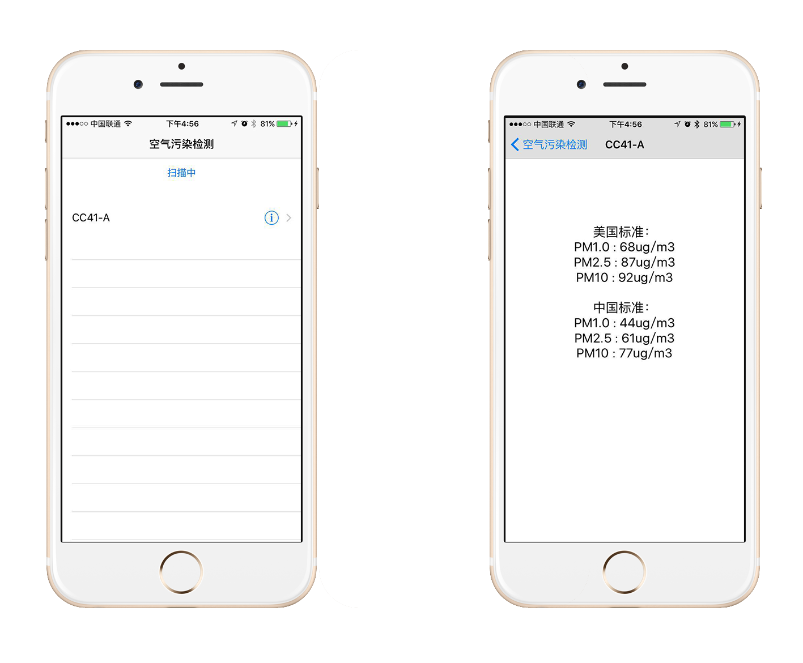

<!DOCTYPE html>
<html lang="en">
<head>
    <meta charset="UTF-8">
    <title>PM2.5 检测仪DIY</title>
    <link rel="stylesheet" href="css/reveal.css">
    <link rel="stylesheet" href="css/theme/white.css">
    <link rel="stylesheet" href="lib/css/zenburn.css">
</head>
<body>
    <div class="reveal">
        <div class="slides">
            <section data-markdown>
                <script type="text/template">
                    ## PM2.5 检测仪DIY
                    <br><br><br>
                    #### 答辩人:刘嘉铭
                </script>
            </section>
            <section data-markdown>
                <script type="text/template">
                    ## 作品介绍
                    <br>
                    结合**传感器**与**APP开发**技术, 利用手机读取空气污染指数的一款物联网产品.
                </script>
            </section>
            <section data-markdown>
                <script type="text/template">
                    ## 硬件材料
                    <br>
                    *   攀藤G5模块(PM2.5传感器)
                    *   蓝牙4.0模块
                    *   USB转TTL模块
                    *   洞洞板一块
                    *   导线、杜邦线、排针等等若干
                    *   USB转接板
                </script>
            </section>
            <section data-markdown>
                <script type="text/template">
                    ## 主要技术
                    <br>
                    *   iOS应用开发
                    *   蓝牙4.0协议
                    *   串口通信协议
                </script>
            </section>
            <section data-markdown>
                <script type="text/template">
                    ## 硬件展示
                    <br>
                    
                </script>
            </section>
            <section data-markdown>
                <script type="text/template">
                    ## 上位机测试
                    <!---->
                    
                </script>
            </section>
            <section data-markdown>
                <script type="text/template">
                    ## APP展示
                    
                </script>
            </section>
            <section data-markdown>
                <script type="text/template">
                    # 谢谢观看!!
                </script>
            </section>
            <!--<section data-markdown="markdown/2.md" data-separator="^\n\n\n" data-separator-vertical="^\n\n"></section>-->
            <!--<section data-markdown="markdown/3.md" data-separator="^\n\n\n" data-separator-vertical="^\n\n"></section>-->
            <!--<section data-markdown="markdown/4.md" data-separator="^\n\n\n" data-separator-vertical="^\n\n"></section>-->
            <!--<section data-markdown="markdown/5.md" data-separator="^\n\n\n" data-separator-vertical="^\n\n"></section>-->
            <!--<section data-markdown="markdown/6.md" data-separator="^\n\n\n" data-separator-vertical="^\n\n"></section>-->
            <!--<section data-markdown="markdown/7.md" data-separator="^\n\n\n" data-separator-vertical="^\n\n"></section>-->
            <!--<section data-markdown="markdown/8.md" data-separator="^\n\n\n" data-separator-vertical="^\n\n"></section>-->
        </div>
    </div>

    <script src="lib/js/head.min.js"></script>
    <script src="js/reveal.js"></script>

    <script>

        Reveal.initialize({
            controls: true,
            progress: true,
            history: true,
            center: true,

            // Optional libraries used to extend on reveal.js
            dependencies: [
                { src: 'lib/js/classList.js', condition: function() { return !document.body.classList; } },
                { src: 'plugin/markdown/marked.js', condition: function() { return !!document.querySelector( '[data-markdown]' ); } },
                { src: 'plugin/markdown/markdown.js', condition: function() { return !!document.querySelector( '[data-markdown]' ); } },
                { src: 'plugin/highlight/highlight.js', async: true, callback: function() { hljs.initHighlightingOnLoad(); } },
                { src: 'plugin/notes/notes.js' }
            ]
        });
        Reveal.configure({ transition: 'zoom' });

    </script>
</body>
</html>